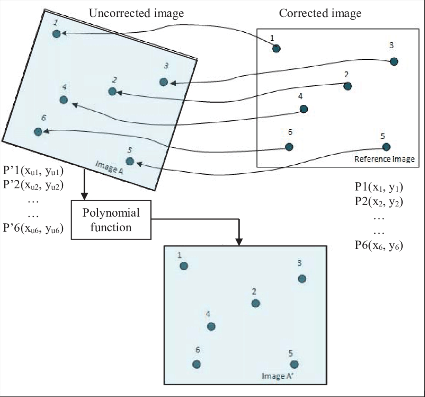
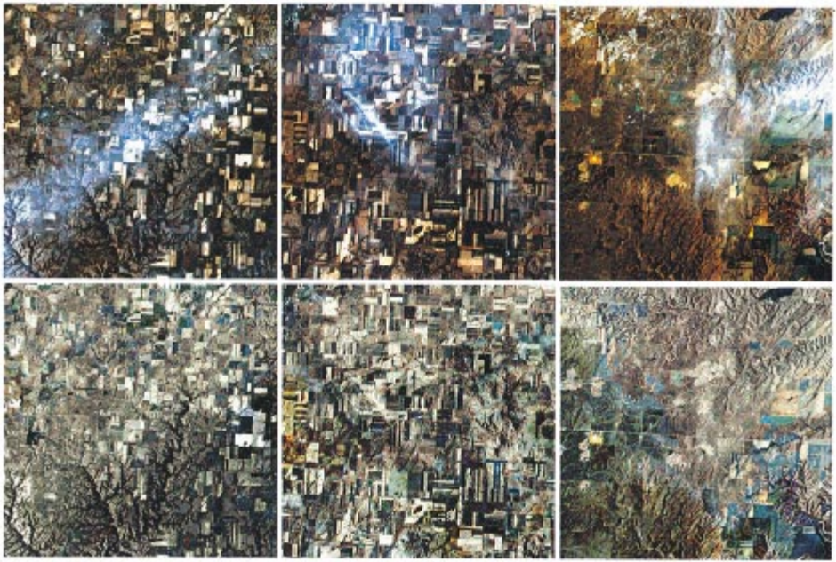
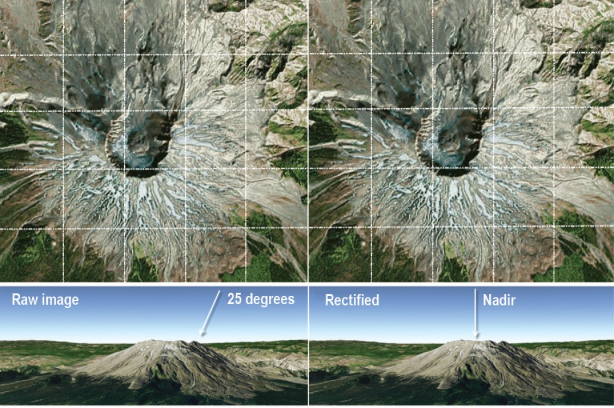
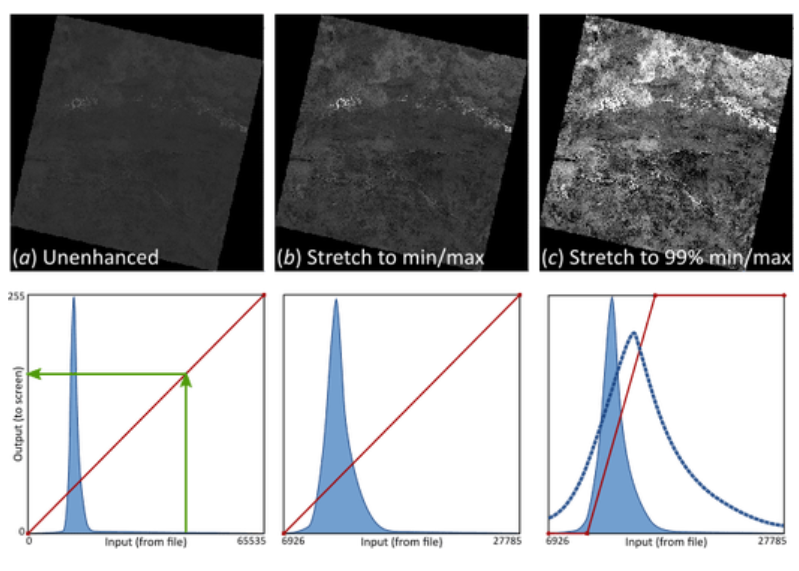

WEEK 3
Remote sensing data
This is a learning diary of CASA0023 WEEK 3, the lecture presentation is here, and the practical material is here.
1 Summary

1.1 Pre-knowledge
Different sensors
MSS(Multispectral Scanner)RBV(Return Beam Vidicon Camera)
Push broom vs Whisk broom
Whisk broomor spotlight or across track scanners: Mirror reflects light onto 1 detector - LandsatPush broomor along track scanners: several detectors that are pushed along - SPOT, Quickbird
1.2 Corrections
Regression
\[ y_i=\beta_0+\beta_1x_i+\varepsilon_i \]
β0is the intercept (the value of y when x = 0)β1the ‘slope’ the change in the value of y for a 1 unit change in the value of xϵiis a random error term (positive or negative)- if you add all of the vertical differences between the blue line and all of the residuals, it should sum to 0- Any value of y along the blue line can be modeled using the corresponding value of x
Geometric correction
What leads to image distortions
View angle(off-nadir)Topography(e.g. hills not flat ground)Wind(if from a plane)Rotation of the earth (from satellite)
Geometric correction solution

Identify Ground Control Points (GPS) to match known points in the image and a reference dataset
Take the coordinates and model them to give geometric transformation coefficients, linear regression with our distorted x or y as the dependent or independent
Input to output (forward mapping): the issue with this is that we are modelling the rectified x and y which could fall anywhere on the gold standard map (e.g. not on a grid square or at a floating point)Output to input (backward mapping): for every value in the output (gold standard) pixel we can get a value in the original input image. The images are distorted as so might not completely overlap. The goal is to match the distorted image with the gold standard image, so we want the pixels to line up
Plot these and try to minimise the RMSE - Jensen sets a RMSE value of 0.5, typically might add more GCPs to reduce the RMSE (The model with the lowest RMSE will fit best)
RMSE: (observed - predicted (the residual))^2, sum them and divide by number of data points, square root that totalResample methods: Nearest Neighbor, Linear, Cubic, Cubic spline
Atmospheric correction
Necessary and unnecessary atmospheric correction
- Necessary
- Biophysical parameters needed (e.g. temperature, leaf area index, NDVI)
- Using spectral signatures through time and space
- Unnecessary
- Classification of a single image
- Independent classification of multi date imagery
- Composite images (combining images)
- Single dates or where training data extracted from all data
Atmospheric correction in action

Absorptionandscatteringcreate the haze = reduces contrast of image- Scattering = can create the “adjacency effect”, radiance from pixels nearby mixed into pixel of interest
Atmospheric correction types
- Relative (to something)
Normalize- Normalize intensities of different bands within a single image
- Normalise intensities of bands from many dates to one date
Dark object subtraction (DOS)orhistogram adjustment- Searches each band for the darkest value then subtracts that from each pixel
- Landsat bands 1-3 (visible) have increased scattering vs longer wavelengths
Psuedo-invariant Features (PIFs)- Assume brightness pixels linearly related to a base image
- Regression per band
- Adjust the image based on the regression result
- Here y is the value of our base. To get y we multiply our new date pixel (x) by the coefficient and add the intercept value
- Apply this to the rest of the pixels
- Absolute (definitive)
- Method
- Change digital brightness values into scaled surface reflectance. We can then compare these scaled surface reflectance values across the planet
- We do this through atmospheric radiative transfer models and there are many to select from
- However, nearly all assume atmospheric measurements are available which are used to “invert” the image radiance to scaled surface reflectance
- The scattering and absorption information comes from atmopshierc radiative transfer code such as MODTRAN 4+ and the Second Simulation of the Satellite Signal in the Solar Spectrum (6S), which can now be used through python - called
Py6S
- Absolute Data requirements
An atmopsheric model(summer, tropical): usually you can select from the toolLocal atmopsheric visibility: from a weather station, like airportsImage altitude
- Absolute Tools
ACORN: Atmopsehic CORection NowFLAASH: Fast Line of-sight Atmopsheric AnalysisQUAC: Quick Atmopsheric CorrectionATCOR: The ATmospheric CORrection programSMAC: Simplified Model for Atmospheric Correction (SMAC)
- Method
- Empirical Line Correction
- We can go and take measurements in situ using a field spectrometer, this does require measurements at the same time as the satellite overpass
- Then use these measurements in linear regression against the satellite data raw digital number
Orthorectification / Topographic correction

A subset of georectification
Georectification= giving coordinates to an imageOrthorectification= removing distortions… making the pixels viewed at nadir (straight down)
Requires
Sensor geometryAn elevation model
Software / formulas to do this
- Jensen covers the following
formulas: Cosine correction, Minnaert correction, Statistical Empirical correction, C Correction (advancing the Cosine) Software: QGIS, SAGA GIS, R package topocorr, R package RStoolbox
Solar location
Solar azimuth= compass angle of the sun (N =0°) 90° (E) at sunrise and 270° (W) at sunsetSolar zenith= angle of local zenith (above the point on ground) and sun from vertical (90° - elevation)
Radiometric calibration
- Sensors capture image brightness and distributed as a
Digital Number (or DN)- allows for efficient storage but has no units - Spectral radiance is the amount of light within a band from a sensor in the
field of view (FOV), it is independent of the sensor, measured in Watts (power or light here) - DN to spectral radiance =
radiometric calibration Sensor calibration= the relationship between Gain and Bias are usually provided but we can calcaulte them
Radiance: refers to any radiation leaving the Earth (i.e. upwelling, toward the sensor- Might also be called Top of Atmosphere (TOA) radiance
- How much light the instrument sees in meaningful units but still have effects of: Light source, atmosphere and surface material
- We can remove the effects of the light source to generate Top of Atmosphere reflectance but usually this is combined within the radiance to reflectance step
Irradiance: is used to describe downwelling radiation reaching the Earth from the sunDigital number (DN)- Intensity of the electromagnetic radiation per pixel
- Pixel values that aren’t calibrated and have no unit
- Have light source
- Effects of sensor + atmosphere + material
- Values range from 0 - 255 (Lansat 5) = 8 bit or 0 - 65536 Landsat 8 (12 bit)
Reflectance: We need to account for atmospheric and illumination effects to create reflectance. BUT this typically doesn’t deal with shadows and directional effects (e.g. viewing angles) = apparent reflectance However, this is often called reflectance- Reflectance is a property of a material (e.g. reflectance of grass is a property of grass)
- The issue with radiance is that is contains physical properties AND is dependent on the light source
Hemispherical reflectance: all of the light leaving the surface goes straight to the sensor (nothing is intercepted or at an angle)Path radiance: radiance reflected above the surface (e.g. scattering)Atmospheric attenuation: absorption of EMR due to materials in atmosphere (e.g. water vapour)Local: specific to pixel- `Neighbourhood: pixels within a range (nearby)
1.3 Data joining and enhancement
Joining data sets
- This is termed “Mosaicking” in remote sensing - but it’s not much different to merging in GIS
- In Remote Sensing we usually
featherthe images together - This creates a seamless mosaic or image(s)
- The dividing line is termed the
seamline - We have a base image and “other” or second image
How to join data sets
Standardization(dividing the SR value by a maximum value per band) andnormalization(divide the standarised value by the sum of values across all bands) applied to each image- Undertake further relative
radiometric normalization Classifyeach image aloneCalculateother metrics from the image
Image enhancement
Contrast enhancement

Minimum - MaximumPercentage LinearandStandard DeviationPiecewise Linear Contrast Stretch
Ratio
Band ratioingmeans dividing the pixels in one band by the corresponding pixels in a second band.- Example: Normalized Burn Ratio = (NIR - SWIR) / (NIR + SWIR)
- In Landsat 4-7, NBR = (Band 4 – Band 7) / (Band 4 + Band 7)
- In Landsat 8-9, NBR = (Band 5 – Band 7) / (Band 5 + Band 7)
Filtering
Low passorlow frequency(averages the surrounding pixels)High passorhigh frequency- enhance local variationsEdge enhancement
PCA (Principal Component)
- Transform multi-spectral data into uncorrelated and smaller dataset
- Has most of the original information
- Reduces future computation “dimensionatliy reduction”
- The first component will capture most of the variance within the dataset
- In R this is from the RStoolbox packagerasterPCA()
- PCA example, multi-date PCA - bands from both time points are combined into one image, then PCA
Texture
- Images just use tonal (spectral) data not texture
Texture: spatial variation of gray valuesFirst order (occurrence): use counts or occurrencesSecond order(co-occurrence): relationship between pixel pairs “a function of both the angular relationship and distance between two (or kernel) neighboring pixels”
Fusion
Image fusion is where data from multiple sensors / sources is fused together
- Pan sharpen
- Data Fusion